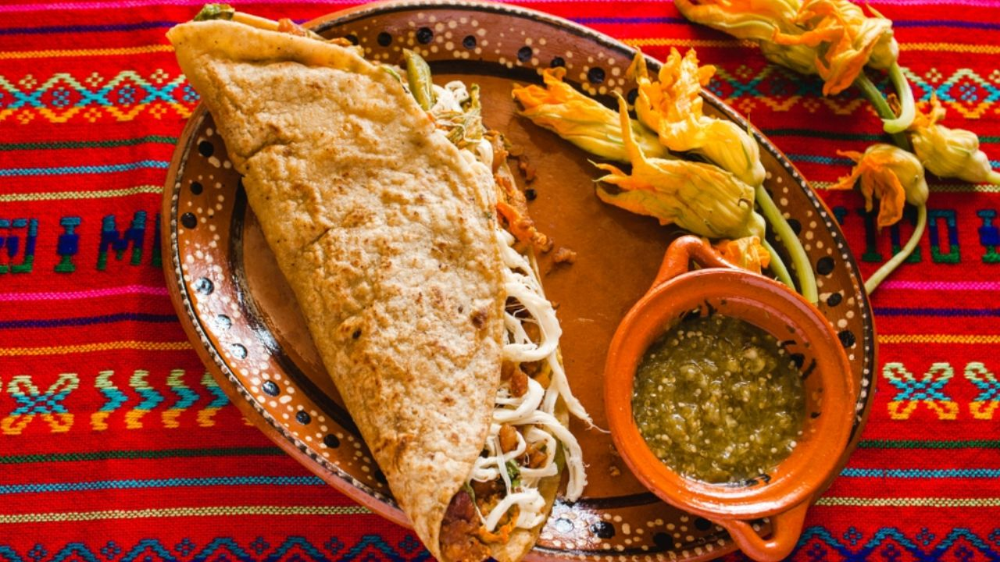

Ribs

Description
Traditional mexican quesadillas
Ingredients
tortillas (corn or wheat)
Steps
heat a pan for 2 minutes
heat the tortilla for 30 seconds
flip the tortilla and heat for 30 secons
add cheese to the tortilla
fold the tortilla
heat the quesadilla until the cheese it's melted and flip it, so it wont burn
enjoy
Home